| 1 | Alberto Otárola | Independiente / Alianza |  | Ex Premier y Abogado Constitucionalista. |
| 2 | Maricarmen Alva | Independiente (Ex AP) | 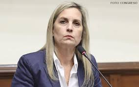 | Ex Presidenta del Congreso y Abogada. |
| 3 | Salvador del Solar | Por definir | 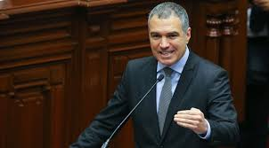 | Ex Premier, Abogado y Director. |
| 4 | Gino Costa | Partido Morado | 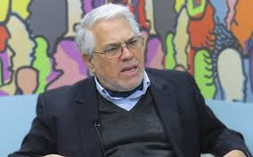 | Experto en Seguridad y ex Congresista. |
| 5 | Kenji Fujimori | Fuerza Popular | 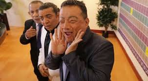 | Ex Congresista y empresario. |
| 6 | Verónika Mendoza | Nuevo Perú | 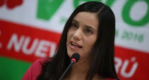 | Psicóloga y ex Candidata Presidencial. |
| 7 | Martín Vizcarra | Perú Primero | | Ex Presidente de la República. |
| 8 | Luis Galarreta | Fuerza Popular | 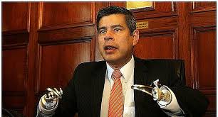 | Ex Presidente del Congreso. |
| 9 | Richard Acuña | Alianza para el Progreso | 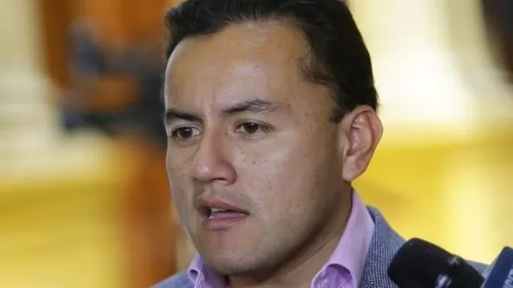 | Ex Congresista y directivo deportivo. |
| 10 | Mesías Guevara | Juntos por el Perú | 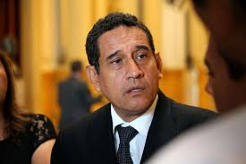 | Ex Gobernador Regional de Cajamarca. |
| 11 | Lourdes Flores Nano | Unidad Nacional / PPC | 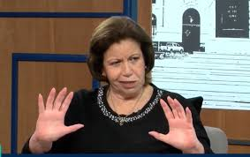 | Abogada y líder histórica del PPC. |
| 12 | Jorge del Castillo | APRA | 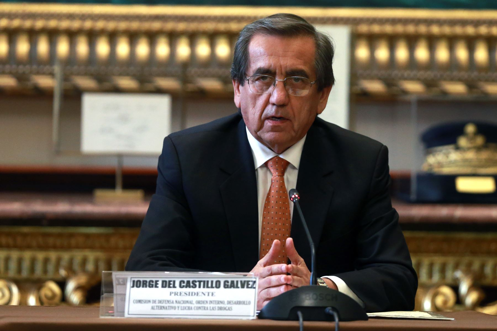 | Ex Premier y líder aprista. |
| 13 | Indira Huilca | En Movimiento | 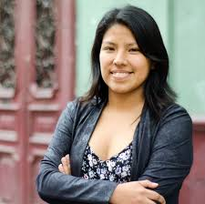 | Socióloga y ex Congresista. |
| 14 | Francisco Sagasti | Partido Morado | 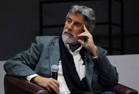 | Ex Presidente de la República e Ingeniero. |
| 15 | Hernando de Soto | Avanza País / Libertad | 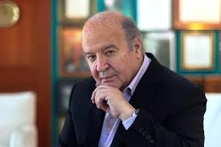 | Economista de prestigio internacional. |
| 16 | Daniel Urresti | Podemos Perú | 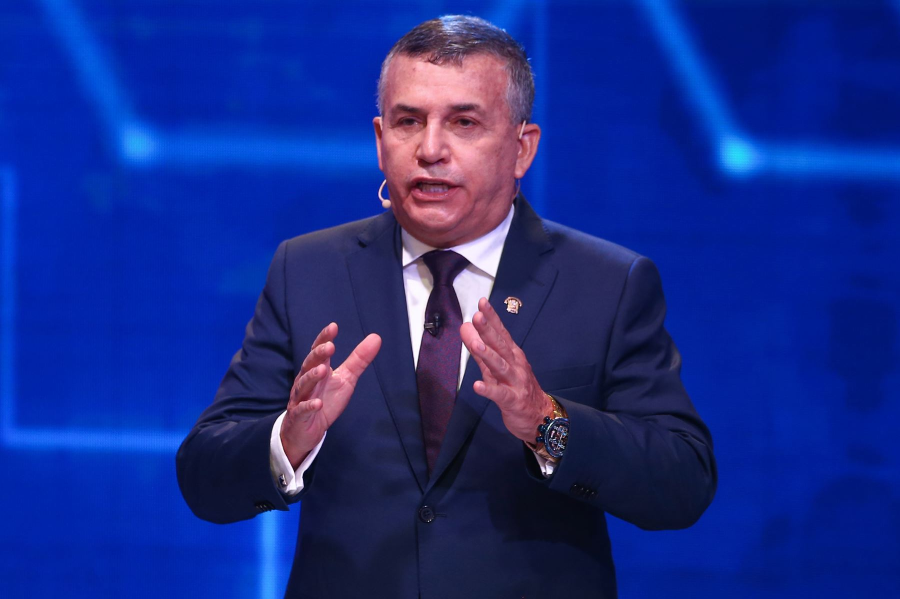 | Ex Ministro del Interior y General en retiro. |
| 17 | Yonhy Lescano | Independiente |  | Ex Congresista y Abogado. |
| 18 | Rosa María Bartra | Renovación Popular | | Ex Presidenta de la Comisión de Constitución. |
| 19 | Rafael López Aliaga | Renovación Popular | | Actual Alcalde de Lima. |
| 20 | Susel Paredes | Primero la Gente | 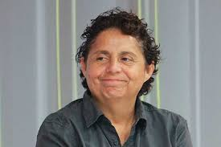 | Abogada y Congresista. |
| 21 | Lady Camones | Alianza para el Progreso | 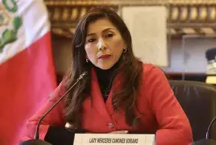 | Ex Presidenta del Congreso. |
| 22 | Ed Málaga | Independiente | 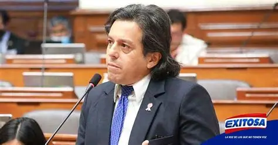 | Científico Neurobiólogo. |
| 23 | Patricia Juárez | Fuerza Popular | 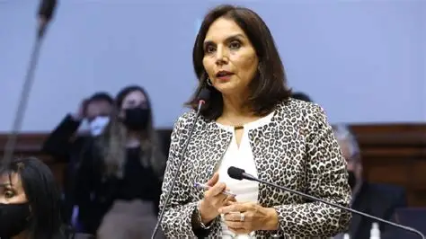 | Abogada y ex Teniente Alcaldesa. |
| 24 | Roberto Chiabra | Unidad y Paz | 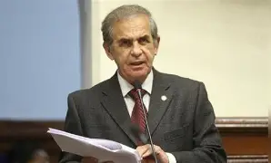 | General en retiro. |
| 25 | Gloria Montenegro | Partido Morado | 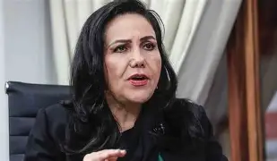 | Ex Ministra de la Mujer. |
| 26 | Carlos Bruce | Avanza País | 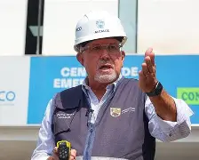 | Ex Ministro y alcalde. |
| 27 | Mauricio Mulder | APRA | 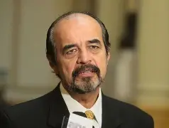 | Ex Congresista. |
| 28 | Sigrid Bazán | Cambio Democrático | 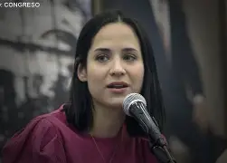 | Congresista. |
| 29 | Gladys Echaíz | Honor y Democracia | 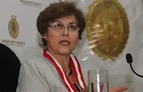 | Ex Fiscal de la Nación. |
| 30 | George Forsyth | Somos Perú | 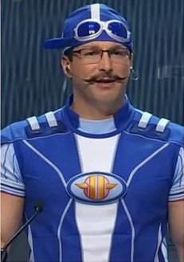 | Ex Alcalde de La Victoria. |